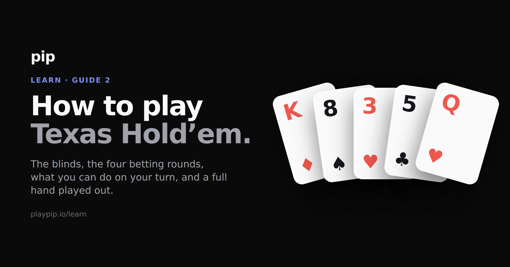

How to play Texas Hold’em

Every player gets two private cards. Five more are dealt face up in the middle, in three stages, with a round of betting after each stage. You make the best five-card hand you can out of the seven available to you. If two or more players are still in at the end, the cards are shown and the best hand takes the pot.
That is the whole game. The rest of this page is the detail: what the blinds are for, who acts when, what your options are on your turn, and a full hand played out from the deal to the showdown.
Before any cards are dealt
Three seats have names, and they move one place to the left after every hand.
The button marks who is nominally the dealer. It matters because the player on the button acts last on every betting round after the first, which is the biggest positional advantage in the game.
The small blind sits directly to the left of the button. The big blind sits to the left of the small blind. Both put chips in before they have seen a card. The big blind is the full opening bet, and the small blind is usually half of it.
Blinds exist to make the game move. Without them there is no cost to sitting and folding forever, so nobody would ever have a reason to play a hand. The blinds put something in the middle worth winning, and they rotate so everyone pays them equally.
The four betting rounds
| Round | What gets dealt | Cards face up | Who acts first |
|---|---|---|---|
| Preflop | Two private cards to each player | 0 | The player left of the big blind |
| The flop | Three community cards, together | 3 | The first player left of the button |
| The turn | One more community card | 4 | The first player left of the button |
| The river | One more community card | 5 | The first player left of the button |
The community cards belong to everybody. Your hand is the best five out of your two plus those five.
Notice the change after the first round. Preflop the blinds act last, because they have already put money in and deserve the last word on it. From the flop onwards the button acts last, every single round, and keeps that advantage for the whole hand. That one detail is why position matters so much that it has a guide of its own.
What you can do on your turn
Five things, and which of them are available depends entirely on whether somebody has bet.
Fold. Give up the hand. You lose whatever you have already put in and nothing more.
Check. Pass the action along without putting in chips. Only available when there is no bet in front of you.
Call. Match the current bet.
Bet. Put chips in when nobody else has yet this round.
Raise. Increase an existing bet. A raise must be at least as big as the last bet or raise. If somebody bets 20, you cannot make it 25. The smallest raise available to you is 40.
The rule that catches almost everyone on their first night is the checking rule. You can only check when there is nothing to call. Once anybody bets, checking disappears from your options and you are choosing between call, raise and fold. That is the whole choice, every time.
In no-limit Hold’em you may also move all-in at any point, betting every chip in front of you. You can never be forced to bet more than you have, and you can never lose more than is on the table.
Can you check?
1 of 3The flop is out. Nobody has bet yet, and the action is on you.
A hand, from the deal to the showdown
Six players, blinds of 10 and 20. You are on the button.
Preflop. You are dealt K♠ Q♠. The first two players fold. The player to your right calls 20. You raise to 60. Both blinds fold, giving up the 10 and 20 they had already posted. The remaining player calls your extra 40.
There is now 150 in the pot, and two players left.
The flop: K♦ 8♠ 3♥. Your opponent acts first, because you have the button. He checks. You have made a pair of kings with a queen kicker, so you bet 90. He calls. The pot is 330.
The turn: 5♣. He checks again. You bet 200. He calls. The pot is 730.
The river: Q♥. The board now reads K♦ 8♠ 3♥ 5♣ Q♥, and your queen has paired too. You hold two pair, kings and queens. He checks, you bet 350, and he calls. The pot is 1,430.
The showdown. You bet last, so you show first. You turn over K♠ Q♠. He shows K♥ J♦.
Both of you have a pair of kings, so the kickers settle it. Your best five cards are K♠ K♦ Q♠ Q♥ 8♠, which is two pair. His are K♥ K♦ Q♥ J♦ 8♠, which is one pair. Two pair beats one pair and you take the 1,430.
Read his hand again, though, because it makes a point that costs beginners money. His jack played. The queen on the river went into his hand as well as yours, and his fifth card was the jack from his own hand. Every card on the table is available to every player, so a card that helps you often helps somebody else at the same time.
Which five cards are yours
This is the single most misunderstood rule in Hold’em, so it is worth stating on its own.
You make the best five-card hand out of the seven available, and you are not required to use your own cards at all. Sometimes both of your cards play. Sometimes one plays and the other is dead weight. Sometimes the five cards on the table are already better than anything you can make with them, in which case everybody still in the hand has the same hand and the pot is split.
People who have played Omaha often get this backwards, because Omaha makes you use exactly two of your four cards. Hold’em has no such rule. Count to the best five and stop.
Which five cards play?
1 of 3Seven cards are available to you. Tap the five that make your hand.
Your cards
The board
0 of 5 picked
The showdown, in detail
The last player to bet or raise shows their cards first. If nobody bet on the river, the first active player to the left of the button shows first, and the rest follow clockwise.
If your hand cannot win, you can muck it: fold it face down without showing. You give up any claim to the pot, and nobody learns what you had.
Suits never break a tie. There is no suit ranking in Texas Hold’em, so two players with genuinely identical hands split the pot down the middle. The full order, and how ties are settled inside each hand, is on the hand rankings page.
Five things that catch people out
You do not have to use both your cards. Or either of them. See above.
You cannot check when there is a bet in front of you. Call, raise or fold.
A raise has a minimum size. At least the size of the last bet or raise.
The button moves every hand. Position is a rotation, not a seat you got given.
Folding is a move, not a failure. Most hands are worth folding, and folding them is what a good player spends most of the night doing. Which hands are worth playing is a whole subject in itself, and it is the next guide.
One thing that changes by format rather than by rule: in a tournament the blinds go up on a timer, so waiting for a good hand gets more expensive as the night goes on. In a cash game they stay where they are and you can sit as long as you like. The rules of a hand are identical in both.
Reading the rules gets you to the point where you can follow a hand. Playing gets you to the point where you stop having to think about the order of things at all, which usually takes about twenty minutes and cannot be read into place.
You can play Texas Hold’em on Pip right now, in the browser, against opponents that actually play. Nothing to install, free to play, and the chips are never for sale. It tells you what hand you have made as you go, so the rules on this page turn into something you do rather than something you looked up.
A free account keeps your Roll on every device, and you never need one to play.